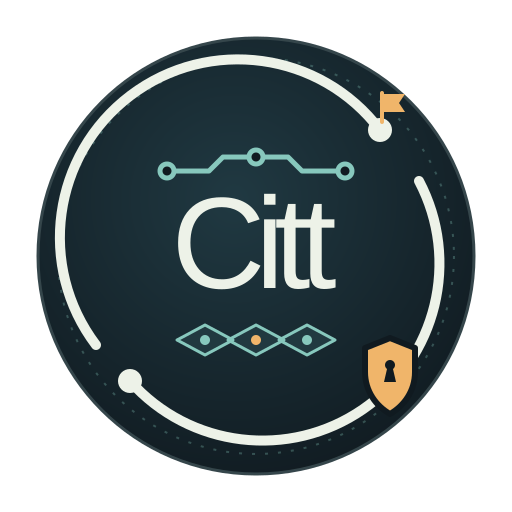
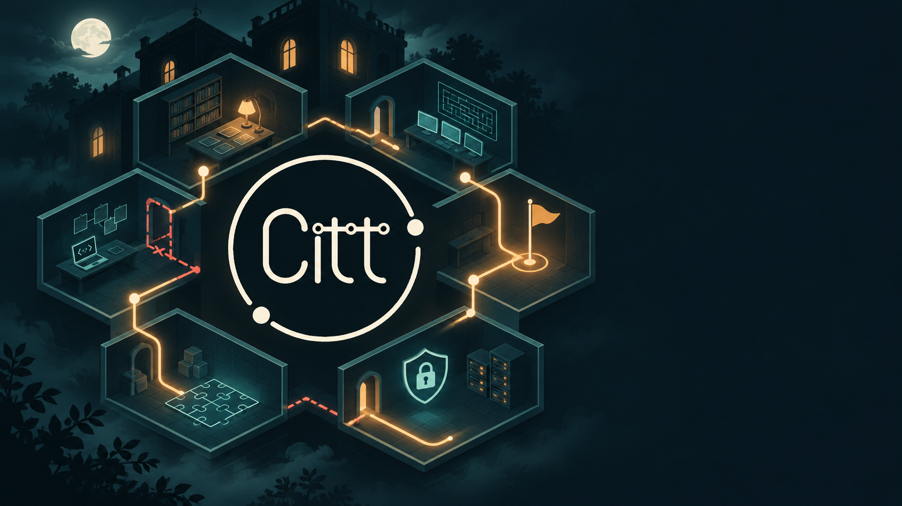

Observa
Explora las pistas y encuentra los detalles que importan.

Mision impoCITTble InscribirmeCTF / CIBERSEGURIDAD / CITT
Entra a Mision impoCITTble, un evento Capture The Flag donde la curiosidad, las pistas y la ciberseguridad se encuentran.
01 / LA EXPERIENCIA
Mision impoCITTble propone una aventura de desafíos de ciberseguridad en formato CTF. Sigue las señales, pon a prueba tu ingenio y avanza hacia la siguiente flag.
Explora las pistas y encuentra los detalles que importan.
Conecta ideas y resuelve desafíos con mentalidad de seguridad.
Encuentra la flag y sigue avanzando en la misión.
NOVIEMBRE / 2026
11MIÉRCOLES
Una jornada para explorar el mundo de la ciberseguridad a través de un CTF.
